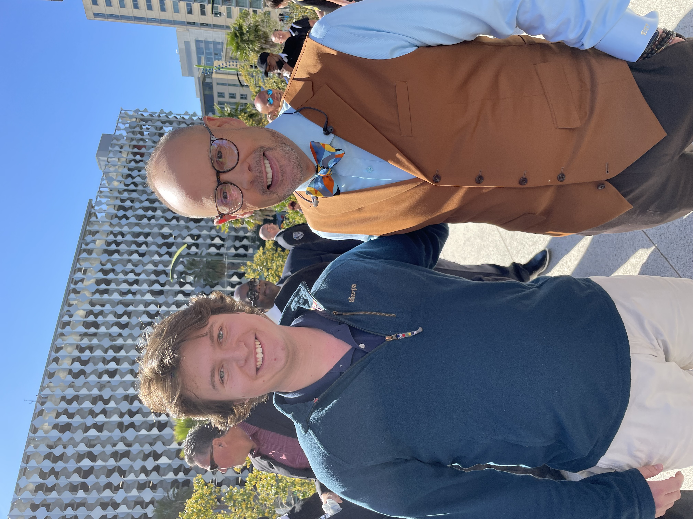

Introduction
I was born on an American Army base Würzburg, Germany. My dad was stationed as a U.S. Army Doctor at the time. I do not remember living in Germany. I was raised and have lived most of my life in Lynchburg, Virginia. I went to Virginia Episocpal School. I am currently studying Journalism and Sport Management at Elon University. I hope to be a Journalist covering colleigate or proffesional basketball.
Interests & Hobbies
I currently work for our student run PR firm Live Oak Communications and with Elon Athletics Communications as a PA Announcer. I have linked some more information about Live Oak. Live Oak Communications. I also record NBA podcasts from time to time. My most recent recording can be played on the right.
Family, Idols & Freinds
I am an only child. My mom's name is Monica. My dad's name is John. On the left is a picture of me and my family. In the middle picture, I am with NBA Broadcasteing legend, Ernie Johnson, at the 2022 NBA Finals. The picture on the right shows me and my freinds; Jack, Xander, Wolfgang, and Hardt at Waffle House in Virginia.
Sports Fandom: The Milwaukee Bucks
My favorite team is the Milwaukee Bucks. Giannis Antetokounmpo is one of my idols. He has a very strong work ethic and has an inspirational rags to riches story. Here is a video of Giannis willing the Bucks to an NBA championship by scoring 50 points in the closeout game 6.